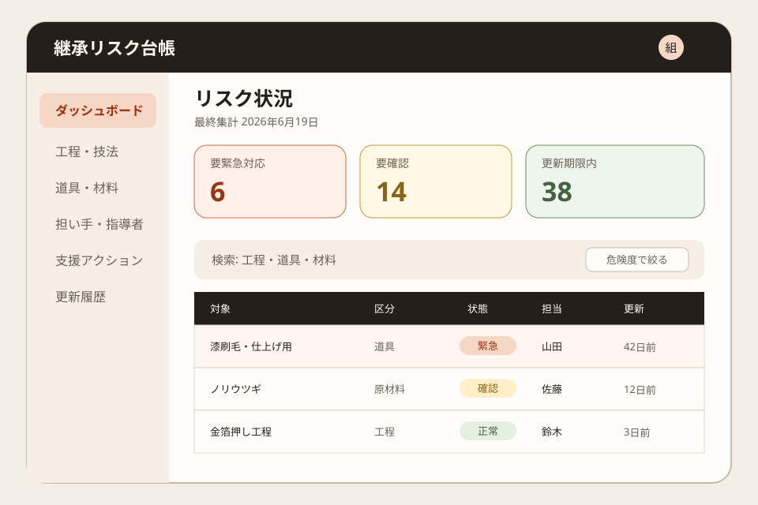
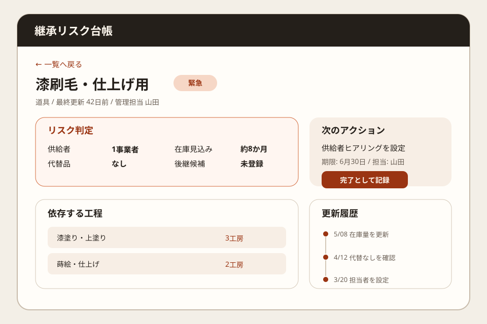

Question Note
伝統工芸の道具・原材料・後継者リスクを見える化する小規模サービス案


全体像
文化庁は、伝統工芸の後継者不足が深刻化する一方、日本の細やかな手仕事は海外でも高く評価されていると説明しています。 経済産業省関係資料では、伝統的工芸品の生産額は1980年代の約5,400億円から2020年度の約870億円へ、 従事者は1979年の約28万8千人から2020年の約5万4千人へ縮小しています。
課題は「若い職人が少ない」だけではありません。 専用道具の供給者、漆や楮などの原材料、教えられる人と工程、数年先の廃業予定が別々に管理され、 代替不能な一工程が消える直前まで関係者に共有されにくいことです。
どの社会問題を切り出すか
全国の伝統産業を救う巨大事業ではなく、初年度は 一つの地域にある工芸組合、文化財修理団体、博物館、自治体文化担当の継承リスク共有に絞ります。
| 現場課題 | 何が起きるか | 既存手段の限界 |
|---|---|---|
| 道具・原材料の供給者が見えない | 廃業や不作が起きてから代替不能と判明し、制作や修理が止まる。 | 職人ごとの連絡先や記憶に依存し、地域全体の危険度を確認できない。 |
| 習得済み工程が共有されない | 「誰が何を教えられるか」が曖昧で、研修希望者と指導者を結べない。 | 名簿は所属を示すだけで、工程別の技能や指導可能時期を扱えない。 |
| 支援の優先順位が決まらない | 補助金や研修枠が、最も断絶に近い工程へ届くとは限らない。 | 表計算が団体ごとに分かれ、供給者数や代替可能性を横断集計できない。 |
既存の仕組みで足りない点
- 紙の名簿は更新日が分からず、道具、材料、工程の関係を追えない。
- 電話やチャットは個別調整には使えるが、廃業予定や供給停止リスクを一覧化できない。
- 表計算は作成団体ごとに項目が異なり、担当者交代時に判断基準が失われる。
- 一般的な顧客管理サービスは、工程、代替可能性、指導可否、必要材料という継承固有の関係を持たない。
サービス案
工芸組合や文化財関係者が、「何が・誰に依存し・いつ途切れそうか」を共同で更新する 小規模なWeb台帳を提供します。販売管理ではなく、年2回の棚卸しと支援判断に用途を限定します。
- 技法・工程ごとに、担い手数、指導可否、後継候補、更新日を登録する。
- 道具・原材料ごとに、供給者数、調達期間、代替品、備蓄量を記録する。
- 供給者が1人、代替なし、更新1年以上なしなどの条件でリスクを色分けする。
- 研修希望者と指導可能者を工程単位で照合し、面談候補を出す。
- 自治体や支援団体向けに、優先支援対象と更新履歴をPDFで出力する。
100万円規模に抑えた市場設定
初年度は近隣3都府県の工芸組合、保存団体、博物館、自治体文化担当50組織を到達可能市場とし、 20組織への導入を目指します。全国展開を前提にせず、年2回の棚卸し支援を1人で回せる範囲です。
| 項目 | 仮定 | 結果 |
|---|---|---|
| 到達可能顧客数 | 近隣3都府県の50組織 | 紹介、研修会、個別訪問で接点を持てる範囲 |
| 初年度シェア | 40% | 20組織 |
| 月額利用料 | 4,000円 x 20組織 | 960,000円/年 |
| 導入支援 | 10,000円 x 6組織 | 60,000円 |
| 初年度売上予想 | 合計 | 1,020,000円 |
収益モデル
- 基本: 組合、保存団体、施設ごとの月額利用料
- 追加: 紙名簿や表計算からの初期データ移行
- 追加: 年2回の棚卸し会議とリスク確認レポート作成
成果報酬では技術継承の成否を短期判定できません。名簿更新と支援判断の作業時間を減らす固定課金にします。
必要なシステム要件と支出
| 領域 | 要件・使い道 | 年額の目安 |
|---|---|---|
| フロント | スマホ・PCで工程、担い手、道具、材料を更新できるWeb画面 | 0円〜 |
| バックエンド | 組織、工程、担い手、供給者、更新履歴、権限を管理 | 36,000円 |
| 通知 | 半年ごとの更新依頼と高リスク項目のメール通知 | 12,000円 |
| 帳票・記録 | CSV入出力、支援優先度PDF、変更履歴 | 18,000円 |
| 運用 | ドメイン、監視、バックアップ、問い合わせ管理 | 36,000円 |
| 専門確認 | 利用規約、情報公開範囲、組合向け説明資料の確認 | 60,000円 |
| 年間支出 | 合計 | 162,000円 |
AIを使った開発見積もり
AIは画面案、登録・更新処理、CSV/PDF、テストデータ、操作説明の初稿に使います。 工芸団体へのヒアリング、公開範囲、リスク判定基準、受け入れ確認は人が責任を持ちます。
| 作業 | AIで短縮できること | 目安 |
|---|---|---|
| 要件整理 | ヒアリング記録から工程・道具・材料のデータ構造を整理 | 3〜5日 |
| プロトタイプ | 一覧、登録、関係図、リスク色分けのたたき台を作成 | 1〜2週間 |
| 本実装 | 権限、更新通知、CSV/PDF、変更履歴、テストを補助 | 2週間 |
| 検証・修正 | 入力漏れ、権限誤り、帳票崩れのテスト観点を作成 | 1週間 |
1人開発でも、初期版は4〜6週間で作る想定です。
売上・支出・利益
売上 - 支出 = 利益
| 項目 | 金額 | 補足 |
|---|---|---|
| 売上 | 1,020,000円 | 月額4,000円 x 20組織 x 12か月 + 導入支援60,000円 |
| 支出 | 162,000円 | 基盤、通知、帳票、運用、専門確認 |
| 利益 | 858,000円 | 実行者の人件費と税金は別途。副業または小規模検証の事業利益 |
必要人数と人材要件
この規模では、実行者1名 + 単発外注を前提にします。
- 実行者: Webアプリを実装でき、職人、組合、博物館、自治体へ丁寧に聞き取りできる人
- 補助外注: 利用規約、情報公開範囲、文化財分野の用語と運用を単発確認する専門家
- 望ましいスキル: CRUD、権限設計、CSV/PDF、業務整理、対面での導入支援
リスクと最初の検証
- 廃業予定や後継者不在を登録する心理的抵抗があり、データが集まらない可能性がある。
- 月額4,000円を払う主体が、組合、自治体、施設のどこなのか地域ごとに異なる。
- リスク点数を断定的に見せると風評につながるため、公開範囲と表現を限定する必要がある。
最初は3組織、20工程、3か月で試し、棚卸し時間、更新率、支援候補の発見数、月額4,000円の支払い意思を確認します。
結論
このテーマは、伝統工芸全体の需要を一度に増やすのではなく、 道具・原材料・後継者の断絶リスクを共同で更新するWeb台帳に切ると、ITで具体的に改善でき、年商100万円規模でも成立しやすいです。